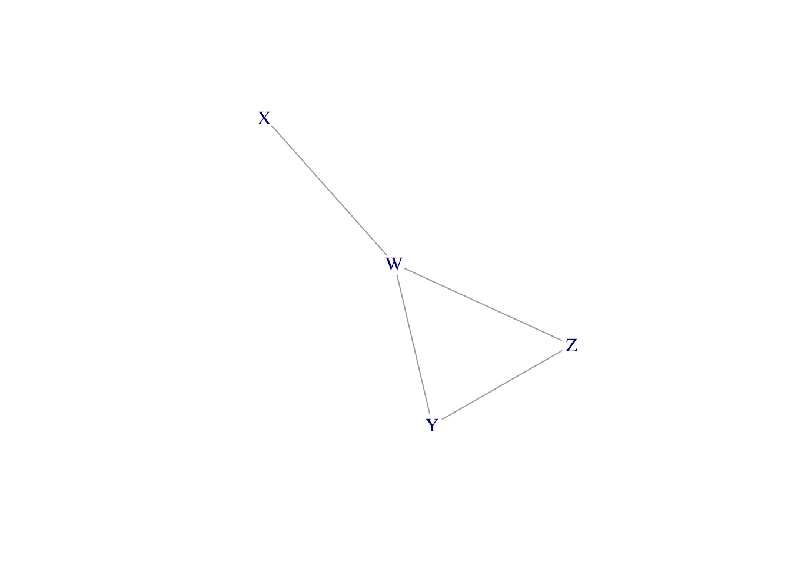
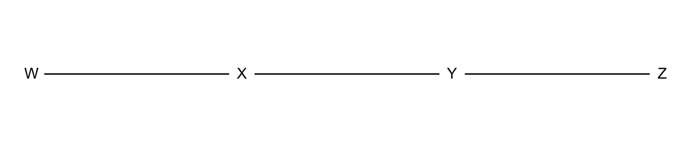
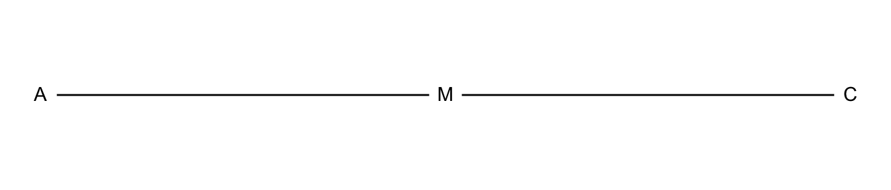
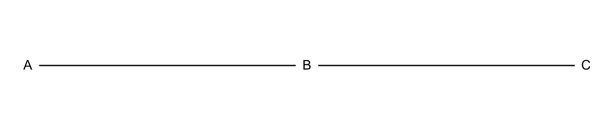

7 Loglinear Models for Contingency Tables and Counts
7.1 Loglinear Models for Counts in Contingency Tables
\[\pi_{ij} = P(X=i)P(Y=j) = \pi_{i+}\pi_{+j},\ i = 1, \dots, r,\ j = 1, \dots, c.\]
7.1.1 Loglinear Model of Independence for Two-Way Contingency Tables
\[\begin{equation} P(Y=1) = \mathrm{log}\mu_{ij} = \lambda + \lambda_i^X + \lambda_j^Y, \tag{17} \end{equation}\]
7.1.2 Interpretation of Parameters in the Independence Model
7.1.3 Example: Happiness and Belief in Heaven
HappyHeaven <-
read.table("http://users.stat.ufl.edu/~aa/cat/data/HappyHeaven.dat",
header = TRUE, stringsAsFactors = TRUE)
HappyHeaven happy heaven count
1 not no 32
2 not yes 190
3 pretty no 113
4 pretty yes 611
5 very no 51
6 very yes 326 no yes
not 32 190
pretty 113 611
very 51 326# canonical link for Poisson is log, so "(link = log)" is not necessary
# loglm() function in MASS library also fits loglinear models
fit <- glm(count ~ happy + heaven, family = poisson, data = HappyHeaven)
summary(fit)
Call:
glm(formula = count ~ happy + heaven, family = poisson, data = HappyHeaven)
Deviance Residuals:
1 2 3 4 5 6
-0.15570 0.06459 0.54947 -0.23152 -0.65897 0.27006
Coefficients:
Estimate Std. Error z value Pr(>|z|)
(Intercept) 3.49313 0.09408 37.13 < 2e-16 ***
happypretty 1.18211 0.07672 15.41 < 2e-16 ***
happyvery 0.52957 0.08460 6.26 3.86e-10 ***
heavenyes 1.74920 0.07739 22.60 < 2e-16 ***
---
Signif. codes: 0 '***' 0.001 '**' 0.01 '*' 0.05 '.' 0.1 ' ' 1
(Dispersion parameter for poisson family taken to be 1)
Null deviance: 1019.87238 on 5 degrees of freedom
Residual deviance: 0.89111 on 2 degrees of freedom
AIC: 49.504
Number of Fisher Scoring iterations: 37.1.4 Saturated Model for Two-Way Contingency Tables
\[ \mathrm{log}\mu_{ij} = \lambda + \lambda_i^X + \lambda_j^Y + \lambda_{ij}^{XY} \] \[\mathrm{log}\theta = \mathrm{log}\big( \frac{\mu_{11}\mu_{22}}{\mu_{12}\mu_{21}}\big) = \mathrm{log}\mu_{11} + \mathrm{log}\mu_{22} - \mathrm{log}\mu_{12} - \mathrm{log}\mu_{21}.\]
7.1.5 Loglinear Models for Three-Way Contingency Tables
\[\mathrm{log}\mu_{ijk} =\lambda + \lambda_i^X+ \lambda_j^Y + \lambda_k^Z +\lambda_{ik}^{XZ} + +\lambda_{jk}^{YZ}.\] \[\mathrm{log}\mu_{ijk} =\lambda + \lambda_i^X+ \lambda_j^Y + \lambda_k^Z + \lambda_{ij}^{XY} +\lambda_{ik}^{XZ} + +\lambda_{jk}^{YZ}.\]
7.1.6 Two-Factor Parameters Describe Conditional Associations
7.1.7 Example: Student Alcohol, Cigarette, and Marijuana Use
Drugs <- read.table("http://users.stat.ufl.edu/~aa/cat/data/Substance.dat",
header = TRUE, stringsAsFactors = TRUE)
Drugs <- Drugs %>%
rename(A = "alcohol") %>%
rename(C = "cigarettes") %>%
rename(M = "marijuana")
`Table 7.1` <- bind_cols(`Alcohol Use` = c("Yes", "", "No", ""),
`Defendants' Race` = rep(c("Yes", "No"),2),
matrix(Drugs$count, ncol = 2,byrow = T,
dimnames = list(NULL,
c("Marijuana Use (Yes)", "Marijuana Use (No)"))))
knitr::kable(`Table 7.1`)| Alcohol Use | Defendants’ Race | Marijuana Use (Yes) | Marijuana Use (No) |
|---|---|---|---|
| Yes | Yes | 911 | 538 |
| No | 44 | 456 | |
| No | Yes | 3 | 43 |
| No | 2 | 279 |
A_C_M <- glm(count ~ A + C + M, family = poisson, data = Drugs)
`(A, C, M)` <- round(exp(predict(A_C_M, data.frame(Drugs))), 1)
AM_CM <- glm(count ~ A + C + M + A:M + C:M, family = poisson, data = Drugs)
`(AM, CM)` <- round(exp(predict(AM_CM, data.frame(Drugs))), 2)
AC_AM_CM <- glm(count ~ A + C + M + A:C + A:M + C:M, family = poisson, data = Drugs)
`(AC, AM, CM)` <- round(exp(predict(AC_AM_CM, data.frame(Drugs))), 1)
ACM <- glm(count ~ A + C + M + A:C + A:C + A:M + C:M + A:C:M, family = poisson, data = Drugs)
`(ACM)` <- round(exp(predict(ACM, data.frame(Drugs))), 1)
`Table 7.2` <- bind_cols(`Alcohol Use` = c("Yes", rep("", 3), "No", rep("",3)),
`Cigarette Use` = rep(c("Yes", " ", "No", ""),2),
`Marijuana Use` = rep(c("Yes", "No"), 4),
`(A, C, M)` = `(A, C, M)`,
`(AM, CM)` = `(AM, CM)`,
`(AC, AM, CM)` = `(AC, AM, CM)`,
`(ACM)` = `(ACM)`)
knitr::kable(`Table 7.2`)| Alcohol Use | Cigarette Use | Marijuana Use | (A, C, M) | (AM, CM) | (AC, AM, CM) | (ACM) |
|---|---|---|---|---|---|---|
| Yes | Yes | Yes | 540.0 | 909.24 | 910.4 | 911 |
| No | 740.2 | 438.84 | 538.6 | 538 | ||
| No | Yes | 282.1 | 45.76 | 44.6 | 44 | |
| No | 386.7 | 555.16 | 455.4 | 456 | ||
| No | Yes | Yes | 90.6 | 4.76 | 3.6 | 3 |
| No | 124.2 | 142.16 | 42.4 | 43 | ||
| No | Yes | 47.3 | 0.24 | 1.4 | 2 | |
| No | 64.9 | 179.84 | 279.6 | 279 |
# Table 7.3
line2 <- round(exp(coef(AM_CM)[c("Ayes:Myes", "Cyes:Myes")]), 1)
line3 <- round(exp(coef(AC_AM_CM)[c("Ayes:Cyes", "Ayes:Myes", "Cyes:Myes")]), 1)
line4 <- round(exp(coef(ACM)[c("Ayes:Cyes", "Ayes:Myes", "Cyes:Myes")]), 1)
`Table 7.3` <-
bind_cols(Model = c("(A, C, M)", "(AM, CM)", "(AC, AM, CM)", "(ACM)"),
matrix(c(rep (1.0, 3),
1.0, line2["Ayes:Myes"], line2["Cyes:Myes"],
line3["Ayes:Cyes"], line3["Ayes:Myes"], line3["Cyes:Myes"],
line4["Ayes:Cyes"], line4["Ayes:Myes"], line4["Cyes:Myes"]),
ncol = 3, byrow = T,
dimnames = list(NULL, c("AC", "AM", "CM"))))
knitr::kable(`Table 7.3`)| Model | AC | AM | CM |
|---|---|---|---|
| (A, C, M) | 1.0 | 1.0 | 1.0 |
| (AM, CM) | 1.0 | 61.9 | 25.1 |
| (AC, AM, CM) | 7.8 | 19.8 | 17.3 |
| (ACM) | 7.7 | 13.5 | 9.7 |
\[2.7 = \frac{(909.24 + 438.84)*(0.24 + 179.84)}{(45.76 + 555.16)*(4.76 + 142.16)}.\]
AM_CM <- glm(count ~ A + C + M + A:M + C:M, family = poisson, data = Drugs)
round(exp(predict(AM_CM, data.frame(Drugs))), 2) # Table 7.2
round(exp(coef(AM_CM)), 1) # Table 7.3
is2.7 <- ((909.2395833 + 438.8404255)*(0.2395833 + 179.8404255)) /
((45.7604167 + 555.1595745)*(4.7604167 + 142.1595745))
# collapse over M
AC <-
Drugs %>%
group_by(A, C) %>%
summarise(Count2 = sum(count), .groups = "drop_last")
AC_marginal <- glm(Count2 ~ A + C + A:C, family = poisson, data = AC)
round(exp(predict(AC_marginal, data.frame(AC))), 2)
round(exp(coef(AC_marginal)), 5)
(1449*281)/(500*46)Drugs <- read.table("http://users.stat.ufl.edu/~aa/cat/data/Substance.dat",
header = TRUE, stringsAsFactors = TRUE)
Drugs %>%
filter(row_number() %in% c(1, n())) alcohol cigarettes marijuana count
1 yes yes yes 911
2 no no no 279Drugs <- Drugs %>%
rename(A = "alcohol") %>%
rename(C = "cigarettes") %>%
rename(M = "marijuana")
#A <- Drugs$alcohol
#C <- Drugs$cigarettes
#M <- Drugs$marijuana
fit <- glm(count ~ A + C + M + A:C + A:M + C:M, family = poisson, data = Drugs)
summary(fit)
Call:
glm(formula = count ~ A + C + M + A:C + A:M + C:M, family = poisson,
data = Drugs)
Deviance Residuals:
1 2 3 4 5 6 7 8
0.02044 -0.02658 -0.09256 0.02890 -0.33428 0.09452 0.49134 -0.03690
Coefficients:
Estimate Std. Error z value Pr(>|z|)
(Intercept) 5.63342 0.05970 94.361 < 2e-16 ***
Ayes 0.48772 0.07577 6.437 1.22e-10 ***
Cyes -1.88667 0.16270 -11.596 < 2e-16 ***
Myes -5.30904 0.47520 -11.172 < 2e-16 ***
Ayes:Cyes 2.05453 0.17406 11.803 < 2e-16 ***
Ayes:Myes 2.98601 0.46468 6.426 1.31e-10 ***
Cyes:Myes 2.84789 0.16384 17.382 < 2e-16 ***
---
Signif. codes: 0 '***' 0.001 '**' 0.01 '*' 0.05 '.' 0.1 ' ' 1
(Dispersion parameter for poisson family taken to be 1)
Null deviance: 2851.46098 on 7 degrees of freedom
Residual deviance: 0.37399 on 1 degrees of freedom
AIC: 63.417
Number of Fisher Scoring iterations: 47.2 Statistical Inference for Loglinear Models
7.2.1 Chi-Squared Goodness-of-Fit Tests
# p-value for the (AC, AM, CM) model
AC_AM <- glm(count ~ A + C + M + A:C + A:M, family = poisson, data = Drugs)
AC_CM <- glm(count ~ A + C + M + A:C + C:M, family = poisson, data = Drugs)
AM_CM <- glm(count ~ A + C + M + A:M + C:M, family = poisson, data = Drugs)
AC_AM_CM <- glm(count ~ A + C + M + A:C + A:M + C:M, family = poisson, data = Drugs)
# function to convert to a p-value and return "< 0.0..." with a digit threshold
residualP <- function(x, digits = 2){
pValue <- 1 - pchisq(deviance(x), df.residual(x))
value <- format(round(pValue, digits), scientific = FALSE)
if(value == 0) {
paste0("< 0.", strrep("0", digits-1), "1")
} else {
value
}
}
`Table 7.4` <-
bind_cols(Model = c("(AC, AM)", "(AC, CM)", "(AM, CM)", "(AC, AM, CM)"),
Deviance = c(deviance(AC_AM), deviance(AC_CM), deviance(AM_CM), deviance(AC_AM_CM)),
df = c(df.residual(AC_AM), df.residual(AC_CM), df.residual(AC_AM), df.residual(AC_AM_CM)),
`P-value` = c(residualP(AC_AM, 4), residualP(AC_CM, 4), residualP(AC_AM, 4), residualP(AC_AM_CM))) %>%
mutate(Deviance = round(Deviance, 1))
kable(`Table 7.4`)| Model | Deviance | df | P-value |
|---|---|---|---|
| (AC, AM) | 497.4 | 2 | < 0.0001 |
| (AC, CM) | 92.0 | 2 | < 0.0001 |
| (AM, CM) | 187.8 | 2 | < 0.0001 |
| (AC, AM, CM) | 0.4 | 1 | 0.54 |
7.2.2 Cell Standardized Residuals for Loglinear Models
fit <- glm(count ~ A + C + M + A:C + A:M + C:M, family = poisson, data = Drugs)
fit2 <- glm(count ~ A + C + M + A:M + C:M, family = poisson, data = Drugs)
deviance(fit)[1] 0.3739859[1] 187.7543res <- round(rstandard(fit, type = "pearson"), 3)
res2 <- round(rstandard(fit2, type = "pearson"), 3)
tibble(Alcohol = Drugs$A, Cigarettes = Drugs$C, Marijuana = Drugs$M,
Count = Drugs$count,
"Fitted from fit" = fitted(fit),
"Std. Resid. from fit" = rstandard(fit, type = "pearson"),
"Fitted from fi2" = fitted(fit2),
"Std. Resid. from fit2" = rstandard(fit2, type = "pearson")) %>%
mutate(across(contains("fit"), round, 3))# A tibble: 8 x 8
Alcohol Cigarettes Marijuana Count `Fitted from fi… `Std. Resid. fr…
<fct> <fct> <fct> <int> <dbl> <dbl>
1 yes yes yes 911 910. 0.633
2 yes yes no 538 539. -0.633
3 yes no yes 44 44.6 -0.633
4 yes no no 456 455. 0.633
5 no yes yes 3 3.62 -0.633
6 no yes no 43 42.4 0.633
7 no no yes 2 1.38 0.633
8 no no no 279 280. -0.633
# … with 2 more variables: `Fitted from fi2` <dbl>, `Std. Resid. from
# fit2` <dbl>7.2.3 Significance Tests about Conditional Associations
Analysis of Deviance Table (Type II tests)
Response: count
LR Chisq Df Pr(>Chisq)
A 1281.71 1 < 2.2e-16 ***
C 227.81 1 < 2.2e-16 ***
M 55.91 1 7.575e-14 ***
A:C 187.38 1 < 2.2e-16 ***
A:M 91.64 1 < 2.2e-16 ***
C:M 497.00 1 < 2.2e-16 ***
---
Signif. codes: 0 '***' 0.001 '**' 0.01 '*' 0.05 '.' 0.1 ' ' 17.2.4 Confidence Intervals for Conditional Odds Ratios
Call:
glm(formula = count ~ A + C + M + A:C + A:M + C:M, family = poisson,
data = Drugs)
Deviance Residuals:
1 2 3 4 5 6 7 8
0.02044 -0.02658 -0.09256 0.02890 -0.33428 0.09452 0.49134 -0.03690
Coefficients:
Estimate Std. Error z value Pr(>|z|)
(Intercept) 5.63342 0.05970 94.361 < 2e-16 ***
Ayes 0.48772 0.07577 6.437 1.22e-10 ***
Cyes -1.88667 0.16270 -11.596 < 2e-16 ***
Myes -5.30904 0.47520 -11.172 < 2e-16 ***
Ayes:Cyes 2.05453 0.17406 11.803 < 2e-16 ***
Ayes:Myes 2.98601 0.46468 6.426 1.31e-10 ***
Cyes:Myes 2.84789 0.16384 17.382 < 2e-16 ***
---
Signif. codes: 0 '***' 0.001 '**' 0.01 '*' 0.05 '.' 0.1 ' ' 1
(Dispersion parameter for poisson family taken to be 1)
Null deviance: 2851.46098 on 7 degrees of freedom
Residual deviance: 0.37399 on 1 degrees of freedom
AIC: 63.417
Number of Fisher Scoring iterations: 4Waiting for profiling to be done... 2.5 % 97.5 %
(Intercept) 2.481623e+02 313.62395491
Ayes 1.404993e+00 1.89112888
Cyes 1.087964e-01 0.20616472
Myes 1.700562e-03 0.01136462
Ayes:Cyes 5.601452e+00 11.09714777
Ayes:Myes 8.814046e+00 56.64359514
Cyes:Myes 1.264576e+01 24.06925090Caution: Notice the LCL is in scientific notation and UCL is not.
7.2.5 Bayesian Fitting of Loglinear Models
# library(MCMCpack)
fitBayes <- MCMCpack::MCMCpoisson(count ~ A + C + M + A:C + A:M + C:M,
family = poisson, data = Drugs)
summary(fitBayes)
Iterations = 1001:11000
Thinning interval = 1
Number of chains = 1
Sample size per chain = 10000
1. Empirical mean and standard deviation for each variable,
plus standard error of the mean:
Mean SD Naive SE Time-series SE
(Intercept) 5.6317 0.06074 0.0006074 0.002972
Ayes 0.4887 0.07724 0.0007724 0.003819
Cyes -1.9087 0.16429 0.0016429 0.008122
Myes -5.4132 0.52796 0.0052796 0.028710
Ayes:Cyes 2.0777 0.17597 0.0017597 0.008503
Ayes:Myes 3.0854 0.51755 0.0051755 0.028275
Cyes:Myes 2.8521 0.16623 0.0016623 0.008234
2. Quantiles for each variable:
2.5% 25% 50% 75% 97.5%
(Intercept) 5.514 5.5910 5.6335 5.6734 5.7516
Ayes 0.341 0.4368 0.4876 0.5405 0.6403
Cyes -2.236 -2.0164 -1.9130 -1.7984 -1.5781
Myes -6.630 -5.7281 -5.3880 -5.0329 -4.5381
Ayes:Cyes 1.724 1.9634 2.0824 2.1995 2.4190
Ayes:Myes 2.200 2.7239 3.0505 3.3822 4.2256
Cyes:Myes 2.542 2.7370 2.8498 2.9643 3.1767# posterior prob. that AM log odds ratio < 0
# (parameter 6 in model is AM log odds ratio)
mean(fitBayes[, 6] < 0)[1] 07.2.6 Loglinear Models for Higher-Dimensional Contingency Tables
7.2.7 Example: Automobile Accidents and Seat Belts
7.2.8 Interpreting Three-Factor Interaction Terms
Accidents <- read.table("http://users.stat.ufl.edu/~aa/cat/data/Accidents2.dat",
header = TRUE, stringsAsFactors = TRUE)
Accidents %>%
filter(row_number() %in% c(1, n())) gender location seatbelt injury count
1 female rural no no 3246
2 male urban yes yes 380Accidents <-
Accidents %>%
rename("G" = gender, "L" = location, "S" = seatbelt, "I" = injury)
# G*I = G + I + G:I
fit <- glm(count ~ G*L*S + G*I + L*I + S*I, family = poisson, data = Accidents)
summary(fit)
Call:
glm(formula = count ~ G * L * S + G * I + L * I + S * I, family = poisson,
data = Accidents)
Deviance Residuals:
1 2 3 4 5 6 7 8
-0.15190 0.27851 0.51823 -1.44646 0.16160 -0.43483 -0.42327 1.69037
9 10 11 12 13 14 15 16
-0.34700 0.83292 -0.05675 0.20564 0.21675 -0.76754 0.09329 -0.49684
Coefficients:
Estimate Std. Error z value Pr(>|z|)
(Intercept) 8.08784 0.01654 488.884 < 2e-16 ***
Gmale 0.63640 0.02015 31.579 < 2e-16 ***
Lurban 0.80411 0.01966 40.891 < 2e-16 ***
Syes 0.62713 0.02027 30.940 < 2e-16 ***
Iyes -1.21640 0.02649 -45.918 < 2e-16 ***
Gmale:Lurban -0.28274 0.02441 -11.584 < 2e-16 ***
Gmale:Syes -0.54186 0.02590 -20.925 < 2e-16 ***
Lurban:Syes -0.15752 0.02441 -6.453 1.09e-10 ***
Gmale:Iyes -0.54483 0.02727 -19.982 < 2e-16 ***
Lurban:Iyes -0.75806 0.02697 -28.105 < 2e-16 ***
Syes:Iyes -0.81710 0.02765 -29.551 < 2e-16 ***
Gmale:Lurban:Syes 0.12858 0.03228 3.984 6.78e-05 ***
---
Signif. codes: 0 '***' 0.001 '**' 0.01 '*' 0.05 '.' 0.1 ' ' 1
(Dispersion parameter for poisson family taken to be 1)
Null deviance: 61709.5207 on 15 degrees of freedom
Residual deviance: 7.4645 on 4 degrees of freedom
AIC: 184.92
Number of Fisher Scoring iterations: 37.2.9 Statistical Versus Practical Significance: Dissimilarity Index
\[D = \sum |n_i - \hat\mu_i|/2n = \sum |p_i - \hat\pi_i|/2.\]
fit <- glm(count ~ G*L*S + G*I + L*I + S*I, family = poisson, data = Accidents)
# dissimilarity index for loglinear model (GLS, GI, LI, SI)
DI <- sum(abs(Accidents$count - fitted(fit)))/(2*sum(Accidents$count))
round(DI, 5)[1] 0.00251fit2 <- glm(count ~ G*L + G*S + G*I + L*S + L*I + S*I, family = poisson,
data = Accidents)
# dissimilarity index for loglinear model (GLS, GI, LI, SI)
DI2 <- sum(abs(Accidents$count - fitted(fit2)))/(2*sum(Accidents$count))
round(DI2, 5)[1] 0.008227.3 The Loglinear - Logistic Model Connection
7.3.1 Using Logistic Models to Interpret Loglinear Models
7.3.2 Example: Auto Accident Data Revisited
\[\begin{equation} \mathrm{logit}[P(I=1)]=\alpha + \beta_g^G + \beta_l^L + \beta_s^S. \tag{18} \end{equation}\]
Injury <- read.table("http://users.stat.ufl.edu/~aa/cat/data/Injury_binom.dat",
header = TRUE, stringsAsFactors = TRUE)
# 8 lines in data file, one for each binomial on injury given (G, L, S)
Injury %>%
filter(row_number() %in% c(1, 2, n())) gender location seatbelt no yes
1 female urban no 7287 996
2 female urban yes 11587 759
3 male rural yes 6693 513Injury <- Injury %>%
rename("G" = gender,
"L" = location,
"S" = seatbelt)
fit2 <- glm(yes/(no + yes) ~ G + L + S, family = binomial, weights = no+yes,
data = Injury)
summary(fit2)
Call:
glm(formula = yes/(no + yes) ~ G + L + S, family = binomial,
data = Injury, weights = no + yes)
Deviance Residuals:
1 2 3 4 5 6 7 8
-0.4639 1.7426 0.3172 -1.5365 -0.7976 -0.5055 0.9023 0.2133
Coefficients:
Estimate Std. Error z value Pr(>|z|)
(Intercept) -1.21640 0.02649 -45.92 <2e-16 ***
Gmale -0.54483 0.02727 -19.98 <2e-16 ***
Lurban -0.75806 0.02697 -28.11 <2e-16 ***
Syes -0.81710 0.02765 -29.55 <2e-16 ***
---
Signif. codes: 0 '***' 0.001 '**' 0.01 '*' 0.05 '.' 0.1 ' ' 1
(Dispersion parameter for binomial family taken to be 1)
Null deviance: 1912.4532 on 7 degrees of freedom
Residual deviance: 7.4645 on 4 degrees of freedom
AIC: 82.167
Number of Fisher Scoring iterations: 37.3.3 Condition for Equivalent Loglinear and Logistic Models
7.3.4 Loglinear/Logistic Model Selection Issues
7.4 Independence Graphs and Collapsibility
7.4.1 Independence Graphs
library(igraph)
# pairs of vertices to connect
g <- graph(c("W","X", "Y","Z", "Y","W", "Z","W"), directed = FALSE)
LO <- layout_nicely(g) # original layout
angle <- 2*pi * 7.495/12 # amount of clock face to rotate
RotMat <- matrix(c(cos(angle),sin(angle),-sin(angle), cos(angle)), ncol=2)
LO2 <- LO %*% RotMat
plot(g, vertex.shape = "none", layout = LO2)
# Manually draw the plot
tibble(x = c(0, 1, 2, 2, 1),
y = c(0, 0, 1, -1, 0),
name = c("X", "W", "Y", "Z", "W") ) %>%
ggplot(aes(x = x, y = y)) +
geom_path() +
geom_point(size = 8, color = "white") +
theme_void() +
geom_text(aes(label=name), hjust= .5, vjust= .4)tibble(x = c(0, 1, 2, 3),
y = c(0, 0, 0, 0),
name = c("W", "X", "Y", "Z") ) %>%
ggplot(aes(x = x, y = y)) +
geom_path() +
geom_point(size = 8, color = "white") +
theme_void() +
geom_text(aes(label=name), hjust= .5, vjust= .4)
7.4.2 Collapsibility Conditions for Contingency Tables
tibble(x = c(0, 1, 2),
y = c(0, 0, 0),
name = c("A", "M", "C") ) %>%
ggplot(aes(x = x, y = y)) +
geom_path() +
geom_point(size = 8, color = "white") +
theme_void() +
geom_text(aes(label=name), hjust= .5, vjust= .4)
tibble(x = c(0, 1, 2),
y = c(0, 0, 0),
name = c("A", "B", "C") ) %>%
ggplot(aes(x = x, y = y)) +
geom_path() +
geom_point(size = 8, color = "white") +
theme_void() +
geom_text(aes(label=name), hjust= .5, vjust= .4)
7.4.3 Example: Loglinear Model Building for Student Substance Use
Drugs2 <- read.table("http://users.stat.ufl.edu/~aa/cat/data/Substance2.dat",
header = TRUE, stringsAsFactors = TRUE)
library(dplyr)
`Table 7.5` <- bind_cols(`Alcohol Use` = c("Yes", "", "No", ""),
`Cigarette Use` = rep(c("Yes", "No"),2),
matrix(Drugs2$count, ncol = 8,byrow = T,
dimnames = list(NULL,
c("Y_F_W", "N_F_W", "Y_M_W", "N_M_W", # Yes/No Female/Male whites
"Y_F_O", "N_F_O", "Y_M_O", "N_M_O")))) # whites
#knitr::kable(`Table 7.5`)
library(flextable)
my_header <- data.frame(
col_keys= colnames(`Table 7.5`),
line1 = c("Alcohol Use", "Cigarette Use", rep("Marijuna Use", 8)),
line2 = c("Alcohol Use", "Cigarette Use", rep("White", 4), rep("Other", 4)),
line3 = c("Alcohol Use", "Cigarette Use", rep(c(rep("Female", 2), rep("Male", 2)),2)),
line4 = c("Alcohol Use", "Cigarette Use", rep(c("Yes", "No"), 4))
)
flextable(`Table 7.5`) %>%
set_header_df(
mapping = my_header,
key = "col_keys"
) %>%
theme_booktabs() %>%
merge_v(part = "header") %>%
merge_h(part = "header") %>%
align(align = "center", part = "all")Alcohol Use | Cigarette Use | Marijuna Use | |||||||
White | Other | ||||||||
Female | Male | Female | Male | ||||||
Yes | No | Yes | No | Yes | No | Yes | No | ||
Yes | Yes | 405 | 268 | 453 | 228 | 23 | 23 | 30 | 19 |
No | 13 | 218 | 28 | 201 | 2 | 19 | 1 | 18 | |
No | Yes | 1 | 17 | 1 | 17 | 0 | 1 | 1 | 8 |
No | 1 | 117 | 1 | 133 | 0 | 12 | 0 | 17 | |
Drugs2 <- read.table("http://users.stat.ufl.edu/~aa/cat/data/Substance2.dat",
header = TRUE, stringsAsFactors = TRUE)
#A <- Drugs$alcohol
#C <- Drugs$cigarettes
#M <- Drugs$marijuana
fit1 <- glm(count ~ A + C + M + R + G + G:R, family = poisson, data = Drugs2)
fit2 <- glm(count ~ (A + C + M + R + G)^2, family = poisson, data = Drugs2)
fit3 <- glm(count ~ (A + C + M + R + G)^3, family = poisson, data = Drugs2)
fit4 <- glm(count ~ A + C + M + R + G + A:C + A:M + C:G + C:M + A:G + A:R + G:M + G:R + M:R, family = poisson, data = Drugs2)
fit5 <- glm(count ~ A + C + M + R + G + A:C + A:M + C:M + A:G + A:R + G:M + G:R + M:R, family = poisson, data = Drugs2)
fit6 <- glm(count ~ A + C + M + R + G + A:C + A:M + C:M + A:G + A:R + G:M + G:R, family = poisson, data = Drugs2)
# summary(fit1)
# summary(fit2)
# summary(fit3)
# summary(fit4)
# summary(fit5)
# summary(fit6)
`Table 7.9` <- tibble(Model = c("1. Mutual independence + GR",
"2. Homogeneous association",
"3. All three-factor terms",
"4. AC, AM, CG, CM, AG, AR, GM, GR, MR",
"5. AC, AM, CM, AG, AR, GM, GR, MR",
"6. AC, AM, CM, AG, AR, GM, GR"),
Deviance = c(deviance(fit1), deviance(fit2),
deviance(fit3), deviance(fit4),
deviance(fit5), deviance(fit6)),
df = c(df.residual(fit1), df.residual(fit2),
df.residual(fit3), df.residual(fit4),
df.residual(fit5), df.residual(fit6))) %>%
mutate(Deviance = round(Deviance, 2))
`Table 7.9`# A tibble: 6 x 3
Model Deviance df
<chr> <dbl> <int>
1 1. Mutual independence + GR 1325. 25
2 2. Homogeneous association 15.3 16
3 3. All three-factor terms 5.27 6
4 4. AC, AM, CG, CM, AG, AR, GM, GR, MR 15.8 17
5 5. AC, AM, CM, AG, AR, GM, GR, MR 16.7 18
6 6. AC, AM, CM, AG, AR, GM, GR 19.9 197.4.4 Collapsibility and Logistic Models
7.5 Modeling Ordinal Associations in Contingency Tables
Teenagers <- read.table("http://users.stat.ufl.edu/~aa/cat/data/Teenagers.dat",
header = TRUE, stringsAsFactors = TRUE) %>%
mutate(`Premarital Sex` = recode_factor(sex, "1" = "Always wrong",
"2" = "Almost always wrong",
"3" = "Wrong only sometimes",
"4" = "Not wrong at all")) %>%
mutate(`Teenage Birth Control` = recode_factor(birth, "1" = "Strongly Disagree",
"2" = "Disagree",
"3" = "Agree",
"4" = "Strongly Agree"))
fit <- glm(count ~ factor(sex) + factor(birth), family=poisson,
data = Teenagers)
#summary(fit) # shows Residual deviance: 127.65 on 9 degrees of freedom
#fitted(fit)
fitLinear <- glm(count ~ factor(sex) + factor(birth) + sex:birth, family=poisson,
data = Teenagers)
# summary(fitLinear) # Residual deviance: 11.534 on 8 degrees of freedom
#fitted(fitLinear)
# raw data
# xtabs(Teenagers$count ~ Teenagers$sex + Teenagers$birth)
with(Teenagers, xtabs(count ~ `Premarital Sex` + `Teenage Birth Control`)) Teenage Birth Control
Premarital Sex Strongly Disagree Disagree Agree Strongly Agree
Always wrong 81 68 60 38
Almost always wrong 24 26 29 14
Wrong only sometimes 18 41 74 42
Not wrong at all 36 57 161 157TeenagersPlus <- bind_cols(Teenagers, independence = round(fitted(fit), 1),
linear = round(fitted(fitLinear), 1))
with(TeenagersPlus, xtabs(independence ~ `Premarital Sex` + `Teenage Birth Control`)) Teenage Birth Control
Premarital Sex Strongly Disagree Disagree Agree Strongly Agree
Always wrong 42.4 51.2 86.4 67.0
Almost always wrong 16.0 19.3 32.5 25.2
Wrong only sometimes 30.0 36.3 61.2 47.4
Not wrong at all 70.6 85.2 143.8 111.4 Teenage Birth Control
Premarital Sex Strongly Disagree Disagree Agree Strongly Agree
Always wrong 80.9 67.7 69.4 29.1
Almost always wrong 20.8 23.1 31.5 17.6
Wrong only sometimes 24.4 36.2 65.7 48.8
Not wrong at all 33.0 65.1 157.4 155.57.5.1 Linear-by-Linear Association Model
\[\mathrm{log}\mu_{ij}= \lambda + \lambda_i^X + \lambda_j^Y + \beta\upsilon_i\nu_j.\] \[\begin{equation} \frac{\mu_{ab}\mu_{cd}}{\mu_{ad}\mu_{cg}} = \mathrm{exp}[\beta(\upsilon_c - \upsilon_a)(\nu_d - \nu_b)] \tag{19} \end{equation}\]
7.5.2 Example: Linear-by-Linear Association for Sex Opinions
Teenagers <- read.table("http://users.stat.ufl.edu/~aa/cat/data/Teenagers.dat",
header = TRUE, stringsAsFactors = TRUE)
Teenagers %>%
filter(row_number() %in% c(1, 2, n())) sex birth count
1 1 1 81
2 1 2 68
3 4 4 157# quantitative sex-by birth interaction term
fit <- glm(count ~ factor(sex) + factor(birth) + sex:birth, family=poisson,
data = Teenagers)
summary(fit)
Call:
glm(formula = count ~ factor(sex) + factor(birth) + sex:birth,
family = poisson, data = Teenagers)
Deviance Residuals:
Min 1Q Median 3Q Max
-1.35834 -0.91606 0.07972 0.61648 1.57618
Coefficients:
Estimate Std. Error z value Pr(>|z|)
(Intercept) 4.10684 0.08951 45.881 < 2e-16 ***
factor(sex)2 -1.64596 0.13473 -12.216 < 2e-16 ***
factor(sex)3 -1.77002 0.16464 -10.751 < 2e-16 ***
factor(sex)4 -1.75369 0.23432 -7.484 7.20e-14 ***
factor(birth)2 -0.46411 0.11952 -3.883 0.000103 ***
factor(birth)3 -0.72452 0.16201 -4.472 7.74e-06 ***
factor(birth)4 -1.87966 0.24910 -7.546 4.50e-14 ***
sex:birth 0.28584 0.02824 10.122 < 2e-16 ***
---
Signif. codes: 0 '***' 0.001 '**' 0.01 '*' 0.05 '.' 0.1 ' ' 1
(Dispersion parameter for poisson family taken to be 1)
Null deviance: 431.078 on 15 degrees of freedom
Residual deviance: 11.534 on 8 degrees of freedom
AIC: 118.21
Number of Fisher Scoring iterations: 4Analysis of Deviance Table (Type II tests)
Response: count
LR Chisq Df Pr(>Chisq)
factor(sex) 201.042 3 < 2.2e-16 ***
factor(birth) 91.243 3 < 2.2e-16 ***
sex:birth 116.119 1 < 2.2e-16 ***
---
Signif. codes: 0 '***' 0.001 '**' 0.01 '*' 0.05 '.' 0.1 ' ' 1\[\mathrm{exp}[\beta(\upsilon_4 - \upsilon_1)(\nu_4 - \nu_1)] = \mathrm{exp}[0.286(4-1)(4-1) = 13.1\]
7.5.3 Ordinal Significance Tests of Independence
7.6 Loglinear Modeling of Count Response Variables *
7.6.1 Count Regressoin Modeling of Rate Data
\[\mathrm{log}(\mu/t)= \alpha + \beta_1 x_1 + \cdots + \beta_p x_p.\]
\[\mathrm{log} \mu - \mathrm{log} t = \alpha + \beta_1 x_1 + \cdots + \beta_p x_p.\]
\[\mu = t\ \mathrm{exp}(\alpha + \beta_1 x_1 + \cdots + \beta_p x_p).\]
7.6.2 Example: Death Rates for Lung Cancer Patients
Cancer <- read.table("http://users.stat.ufl.edu/~aa/cat/data/Cancer.dat",
header = TRUE, stringsAsFactors = TRUE)
cancerCountWide <- Cancer %>%
select(-risktime) %>%
pivot_wider(id = time, names_from = c(histology, stage),
values_from=count) %>%
mutate(time = case_when(time == 1 ~ "0-2",
time == 2 ~ "2-4",
time == 3 ~ "4-6",
time == 4 ~ "6-8",
time == 5 ~ "8-10",
time == 6 ~ "10-12",
time == 7 ~ "12+",)) %>%
mutate(`histo` = " ") %>% # blank column for column headings
select(time, histo, everything())
cancerRiskTimeWide <- Cancer %>%
select(-count) %>%
mutate(risktime = paste0("(", risktime, ")")) %>%
pivot_wider(id = time, names_from = c(histology, stage),
values_from=risktime) %>%
mutate(time = case_when(time == 1 ~ "0-2",
time == 2 ~ "2-4",
time == 3 ~ "4-6",
time == 4 ~ "6-8",
time == 5 ~ "8-10",
time == 6 ~ "10-12",
time == 7 ~ "12+",)) %>%
mutate(`histo` = " ") %>%
select(time, histo, everything())
# function to interleave two matrices
# https://stackoverflow.com/questions/19781723/interleave-rows-of-matrix-stored-in-a-list-in-r
# https://gist.github.com/mrdwab/7313857
Interleave <- function(myList, append.source = TRUE, sep = ": ", drop = FALSE) {
sources <- myList
sources[sapply(sources, is.null)] <- NULL
sources <- lapply(sources, function(x) {
if (is.matrix(x) || is.data.frame(x)) {
x
} else {
t(x)
}
})
nrows <- sapply(sources, nrow)
mrows <- max(nrows)
if (any(nrows != mrows & nrows != 1)) {
stop("Arguments have differening numbers of rows.")
}
sources <- lapply(sources, function(x) {
if (nrow(x) == 1) {
x[rep(1, mrows), , drop = drop]
} else {
x
}
})
tmp <- do.call("rbind", sources)
nsources <- length(sources)
indexes <- outer((0:(nsources - 1)) * mrows, 1:mrows, "+")
retval <- tmp[indexes, , drop = drop]
if (append.source && !is.null(names(sources))) {
if (!is.null(row.names(tmp))) {
row.names(retval) <- paste(format(row.names(retval)),
format(names(sources)),
sep = sep
)
} else {
row.names(retval) <- rep(names(sources), mrows)
}
}
retval
}
# objects to interleave
l <- list(a=as.matrix(cancerCountWide),b=as.matrix(cancerRiskTimeWide))
# interleave counts and risk time
bigMatrix <- Interleave(l)
# add columns for titles
biggerMatrix <- data.frame(cbind(bigMatrix[,1], bigMatrix[,2:11]))
names(biggerMatrix) <- names(cancerCountWide)
my_header <- data.frame(
col_keys = c("time", "histo", "blank1",
"1_1", "2_1", "3_1", "blank2",
"1_2", "2_2", "3_2", "blank3",
"1_3", "2_3","3_3"),
line2 = c("Follow-up", "Histology", "", rep("I", 3), "", rep("II", 3), "",
rep("III", 3)),
line3 = c("Follow-up", "Disease Stage", rep(c("", "1", "2", "3"), 3))
)
library(officer)
big_border = fp_border(color="black", width = 2)
library(flextable)
flextable(biggerMatrix, col_keys = my_header$col_keys) %>%
set_header_df(
mapping = my_header,
key = "col_keys"
) %>%
theme_booktabs() %>%
merge_v(part = "header") %>%
merge_h(part = "header") %>%
merge_v(part = "body") %>%
align(align = "center", part = "all") %>%
autofit() %>%
empty_blanks() %>%
hline_top(part="header", border = big_border) %>%
hline_bottom(part="body", border = big_border) %>%
fix_border_issues()Follow-up | Histology | I | II | III | |||||||||
Disease Stage | 1 | 2 | 3 | 1 | 2 | 3 | 1 | 2 | 3 | ||||
0-2 |
| 9 | 5 | 1 | 12 | 4 | 1 | 42 | 28 | 19 | |||
(157) | (77) | (21) | (134) | (71) | (22) | (212) | (130) | (101) | |||||
2-4 | 2 | 2 | 1 | 7 | 3 | 1 | 26 | 19 | 11 | ||||
(139) | (68) | (17) | (110) | (63) | (18) | (136) | (72) | (63) | |||||
4-6 | 9 | 3 | 1 | 5 | 5 | 3 | 12 | 10 | 7 | ||||
(126) | (63) | (14) | (96) | (58) | (14) | (90) | (42) | (43) | |||||
6-8 | 10 | 2 | 1 | 10 | 4 | 1 | 10 | 5 | 6 | ||||
(102) | (55) | (12) | (86) | (42) | (10) | (64) | (21) | (32) | |||||
8-10 | 1 | 2 | 0 | 4 | 2 | 0 | 5 | 0 | 3 | ||||
(88) | (50) | (10) | (66) | (35) | (8) | (47) | (14) | (21) | |||||
10-12 | 3 | 2 | 1 | 3 | 1 | 0 | 4 | 3 | 3 | ||||
(82) | (45) | (8) | (59) | (32) | (8) | (39) | (13) | (14) | |||||
12+ | 1 | 2 | 0 | 4 | 4 | 2 | 1 | 2 | 3 | ||||
(76) | (42) | (6) | (51) | (28) | (6) | (29) | (7) | (10) | |||||
\[\mathrm{log}(\mu_{ijk}/t_{ijk}) = \beta_0 + \beta_i^H + \beta_j^S + \beta_k^T,\]
Cancer <- read.table("http://users.stat.ufl.edu/~aa/cat/data/Cancer.dat",
header = TRUE, stringsAsFactors = TRUE)
Cancer %>%
filter(row_number() %in% c(1, n())) time histology stage count risktime
1 1 1 1 9 157
2 7 3 3 3 10Cancer <- Cancer %>%
mutate("logrisktime" = log(Cancer$risktime))
# showing 6 time effects
fit <- glm(count ~ factor(histology) + factor(stage) + factor(time),
family = poisson, offset = logrisktime, data = Cancer)
summary(fit)
Call:
glm(formula = count ~ factor(histology) + factor(stage) + factor(time),
family = poisson, data = Cancer, offset = logrisktime)
Deviance Residuals:
Min 1Q Median 3Q Max
-2.00333 -0.74769 -0.03194 0.46468 1.70832
Coefficients:
Estimate Std. Error z value Pr(>|z|)
(Intercept) -3.00928 0.16651 -18.073 < 2e-16 ***
factor(histology)2 0.16244 0.12195 1.332 0.18285
factor(histology)3 0.10754 0.14745 0.729 0.46580
factor(stage)2 0.47001 0.17444 2.694 0.00705 **
factor(stage)3 1.32431 0.15205 8.709 < 2e-16 ***
factor(time)2 -0.12745 0.14908 -0.855 0.39259
factor(time)3 -0.07973 0.16352 -0.488 0.62585
factor(time)4 0.11892 0.17107 0.695 0.48694
factor(time)5 -0.66511 0.26061 -2.552 0.01071 *
factor(time)6 -0.35015 0.24348 -1.438 0.15040
factor(time)7 -0.17518 0.24985 -0.701 0.48321
---
Signif. codes: 0 '***' 0.001 '**' 0.01 '*' 0.05 '.' 0.1 ' ' 1
(Dispersion parameter for poisson family taken to be 1)
Null deviance: 175.718 on 62 degrees of freedom
Residual deviance: 43.923 on 52 degrees of freedom
AIC: 251.74
Number of Fisher Scoring iterations: 5Analysis of Deviance Table (Type II tests)
Response: count
LR Chisq Df Pr(>Chisq)
factor(histology) 1.876 2 0.39132
factor(stage) 99.155 2 < 2e-16 ***
factor(time) 11.383 6 0.07724 .
---
Signif. codes: 0 '***' 0.001 '**' 0.01 '*' 0.05 '.' 0.1 ' ' 17.6.3 Negativee Binomial Regression Models
\[E(Y) = \mu,\ \ \mathrm{var}(Y) = \mu + D\mu^2.\]
7.6.4 Example: Female Horseshoe Crab Satelites Revisited
Crabs <- read.table("http://users.stat.ufl.edu/~aa/cat/data/Crabs.dat",
header = TRUE, stringsAsFactors = TRUE)
Crabs %>%
filter(row_number() %in% c(1, n())) crab sat y weight width color spine
1 1 8 1 3.05 28.3 2 3
2 173 0 0 2.00 24.5 2 2
Call:
glm(formula = sat ~ width, family = poisson, data = Crabs)
Deviance Residuals:
Min 1Q Median 3Q Max
-2.8526 -1.9884 -0.4933 1.0970 4.9221
Coefficients:
Estimate Std. Error z value Pr(>|z|)
(Intercept) -3.30476 0.54224 -6.095 1.1e-09 ***
width 0.16405 0.01997 8.216 < 2e-16 ***
---
Signif. codes: 0 '***' 0.001 '**' 0.01 '*' 0.05 '.' 0.1 ' ' 1
(Dispersion parameter for poisson family taken to be 1)
Null deviance: 632.79 on 172 degrees of freedom
Residual deviance: 567.88 on 171 degrees of freedom
AIC: 927.18
Number of Fisher Scoring iterations: 6
Call:
MASS::glm.nb(formula = sat ~ width, data = Crabs, init.theta = 0.90456808,
link = log)
Deviance Residuals:
Min 1Q Median 3Q Max
-1.7798 -1.4110 -0.2502 0.4770 2.0177
Coefficients:
Estimate Std. Error z value Pr(>|z|)
(Intercept) -4.05251 1.17143 -3.459 0.000541 ***
width 0.19207 0.04406 4.360 1.3e-05 ***
---
Signif. codes: 0 '***' 0.001 '**' 0.01 '*' 0.05 '.' 0.1 ' ' 1
(Dispersion parameter for Negative Binomial(0.9046) family taken to be 1)
Null deviance: 213.05 on 172 degrees of freedom
Residual deviance: 195.81 on 171 degrees of freedom
AIC: 757.29
Number of Fisher Scoring iterations: 1
Theta: 0.905
Std. Err.: 0.161
2 x log-likelihood: -751.291